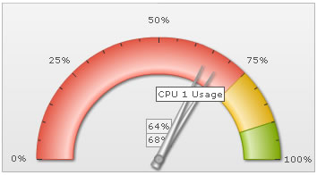

|
The angular gauge is a real time chart, which can continuously request new data from the server and display the same, without involving any page refreshes. You can specify the URL of the data provider and the time interval (in seconds), after which the gauge will look for new data.
The data provider page needs to be a page at your server side, which when invoked by angular gauge, would output the new data in the format explained below. |
| |
The real-time data format for angular gauge depends on:
- Whether you've multiple dials on the chart or a single dial?
- If you've multiple pointers, whether you want to provide data by pointer numerical index or by their defined IDs?
- Whether you're using Message Logger for the chart?
- Commands for the chart - like stop update
Let's quickly see examples of each one of them. |
| |
In the simplest form, if you're looking to update the value of a gauge, you need to output the data in following format:
&value=34
Here, we're just outputting a single value 34. So, when FusionWidgets would read this value, it would update the chart by setting its value to 34 (if the data is within range). |
| |
If you've multiple dials defined, you can update them all in a single update by outputting the following from real-time data provider page:
&value=34|25|54
Here, we're specifying three values in the real-time update. So, assuming that we've 3 dials or pointers defined in the chart, each one of them will take the sequential value and update itself. That is, the first dial would now show 34, second one would show 25 and the third one 54. The sequence of dial is determined by its order in XML data document. |
| |
FusionWidgets also allows you define the ID for each dial or pointer as under:
In angular gauge:
<dial id='CPU1Temp' ..../>
<dial id='CPU2Temp' ..../>
You can now update each of these named dial by outputting the following in your real-time data stream:
&CPU1Temp=23&CPU2Temp=34
This will change the value of dial 1 (with id as CPU1Temp) to 23 and dial 2 to 34.
|
| |
If you wish to stop the chart from polling the server for any more real-time updates, you can send the following command from server to do so:
&stopUpdate=1
After stopping the update, it can be restarted either using user interaction (right click context menu) or using client side JavaScript. |
| |
| The gauge can show message logger like data streaming charts. There are various parameters which you can specify for message logger. All of them have been explained in the section "Message Logger". |
| |
To create any real-time gauge, you'll need to assimilate the following things:
- Chart SWF file and FusionCharts JavaScript class
- XML file that initializes the chart and tells it where to pull the real time data from
- Real time data provider page that provides updated data to chart in real-time data format.
We're already familiar with XML for the chart. The new attributes that need to be added for real-time update are: |
| dataStreamURL |
URL |
This parameter sets the path of the page which is supposed to relay real-time data to the chart. If you've special characters as a part of your data stream URL, like ? or &, you'll need to URL Encode the entire dataStreamURL
This page needs to be on the same sub-domain on which the chart is hosted and invoked from. Otherwise, the Flash sandbox security would restrict it from accessing the data and hence the real-time feature won't work.
Example: dataStreamURL='liveQuote.aspx?name=xyz' |
| refreshInterval |
Number |
For this parameter, you can specify the number of seconds after which the chart will look for new data. This process will happen continuously - i.e., if you specify 5 seconds here, the chart will look for new data every 5 seconds. |
| dataStamp |
String |
Constantly changing data stamp that can be added to real time data URL, so as to maintain a state. Please see the section "Real time capabilities > Adding data-stamp" |
|
Shown below is an example chart XML: |
<chart lowerLimit='0' upperLimit='100' gaugeStartAngle='180' gaugeEndAngle='0' palette='1' numberSuffix='%' tickValueDistance='20' showValue='1' decimals='0' dataStreamURL='CPUData.asp' refreshInterval='3'>
<colorRange>
<color minValue='0' maxValue='75' code='FF654F'/>
<color minValue='75' maxValue='90' code='F6BD0F'/>
<color minValue='90' maxValue='100' code='8BBA00'/>
</colorRange>
<dials>
<dial id='CPU1' value='92' rearExtension='10' toolText='CPU 1 Usage'/>
<dial id='CPU2' value='43' rearExtension='10' toolText='CPU 2 Usage'/>
</dials>
<styles>
<definition>
<style type='font' name='myValueFont' bgColor='F1f1f1' borderColor='999999' />
</definition>
<application>
<apply toObject='Value' styles='myValueFont' />
</application>
</styles>
</chart> |
Here, we've set dataStreamURL='CPUData.asp' refreshInterval='3', which tells the chart to poll new data from CPUData.asp every 3 seconds.
For the sake of demo, CPUData.asp returns 2 random values within 100% in the format:
&value=84|14
It can also return data in the following format, as we've defined the IDs for both dials:
&CPU1=23&CPU2=43
When you run this chart, you'll see something as under, with both dials updating their value every 3 seconds: |
|  |
| |
| If the chart renders initially, but doesn't update in real time, check the following: |
- Switch on the debug mode of chart. It will provide you with a lot of valuable information when debugging.
- Check if path of dataStreamURL provided in XML is correct.
- Check if you've specified a valid value for refreshInterval in your XML document.
- Check if dataStreamURL is returning proper data. To test this, just open your browser and run this page. It should return the data in text format.
- Make sure the output data doesn't contain any carriage returns or HTML elements. In many scripting languages, these are automatically added. You'll need to remove them.
- You also need to make sure that the page which provides the incremental update data to FusionCharts must be hosted on the same sub-domain in which the chart .swf is hosted - otherwise, FusionWidgets, owing to Flash Sandbox security model, won't be able to receive updated data. Due to Flash sandbox security restrictions, you are allowed to retrieve data only from the same sub-domain in which the flash movie is residing. Data can only be loaded from a domain that is an exact match to the location of the SWF, including subdomains. For this reason a SWF residing at server1.mydomain.com will not be able to access data from a SWF at mydomain.com.
If you wish to load data from a different domain, you can set up a proxy page at the same sub domain which would actually request data from the distant domain and then relay it to FusionWidgets. You must be able to upload and run a server-side script on a server in the same domain as the Flash movie. In this method, the Flash movie accesses the script, which loads the information, retrieves it, and returns the information back to the Flash movie. This method is best if the server hosting the data is not under your control (for example, a public source or a web service).
|
|